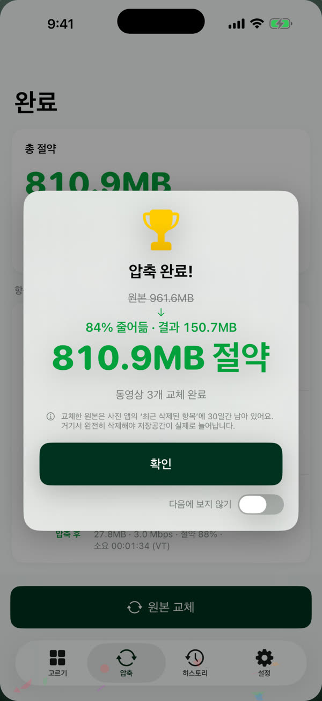
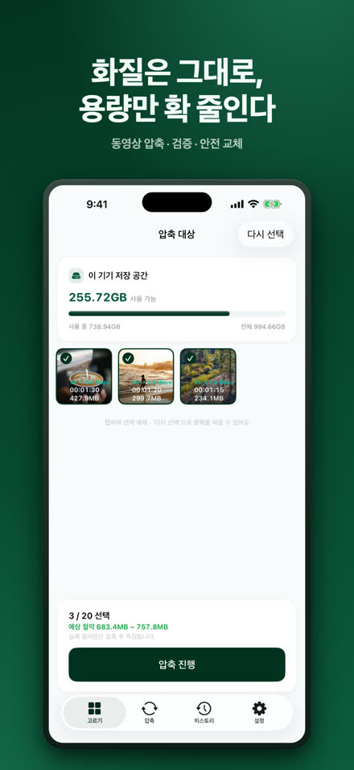
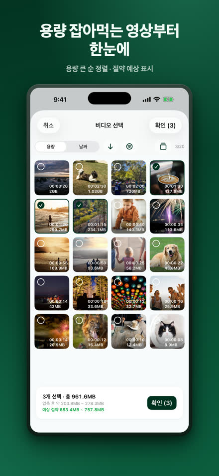
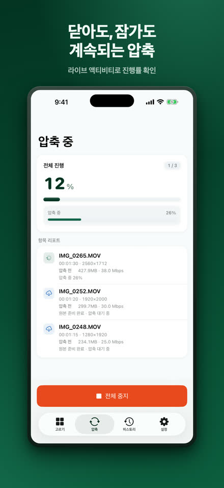
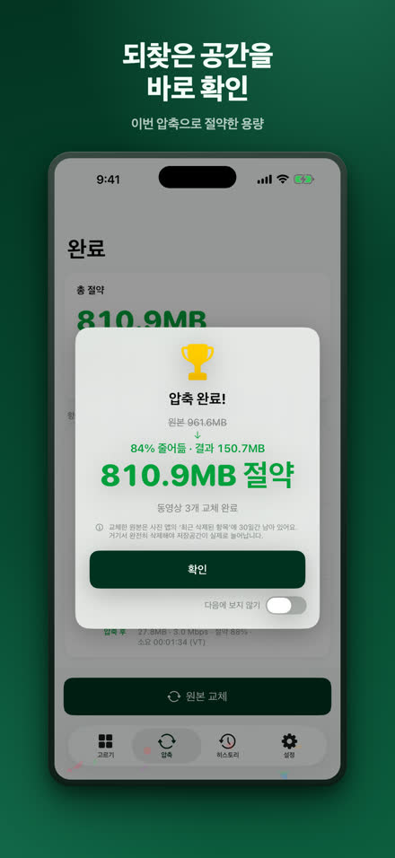
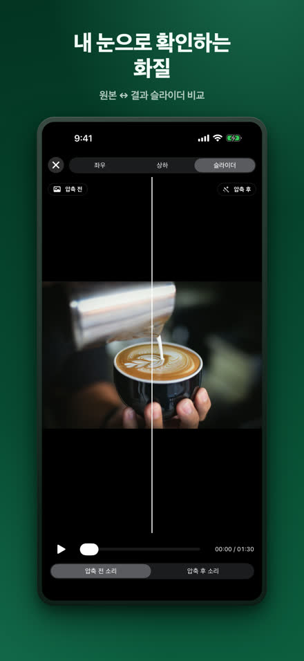
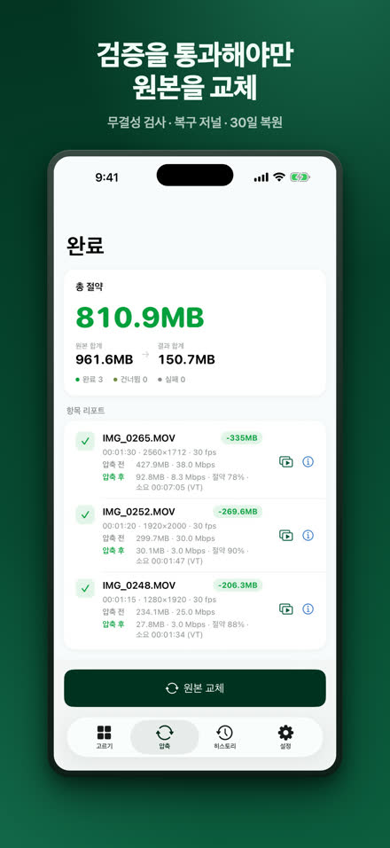
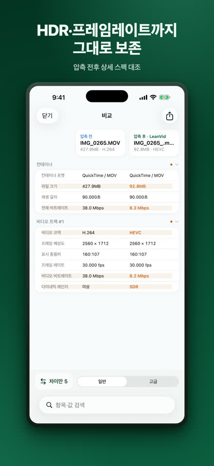
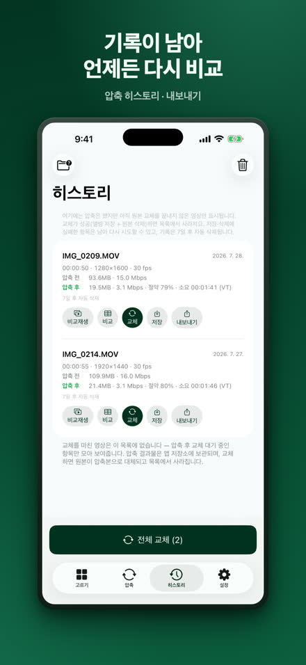

LeanVid
화질은 그대로, 용량만 줄이세요.
LeanVid는 사진 보관함과 파일 앱의 동영상을 비트레이트만 낮춰 압축합니다 — 해상도·프레임레이트·색상·HDR은 그대로 유지됩니다. 모든 결과물은 원본을 교체하기 전에 검증되며, 사진 보관함의 원본은 30일 동안 복원할 수 있습니다.
App Store에서 다운로드하기iOS 18 이상 · iPhone 및 iPad (Apple 실리콘 Mac에서는 iPad 앱으로 실행)

같은 영상, 훨씬 작은 공간.
원본3:341.24 GB
LeanVid3:3499.4 MB
약 92% 작게
직접 잰 예: 3분 34초 화면 녹화. 영상마다 다릅니다.
고르고, 줄이고, 확인하고, 바꾸기.








필요한 건 다 들어 있습니다.
화질 보존 압축
비트레이트만 조정, HDR과 모든 트랙 보존
검증된 안전 교체
무결성 검사·복구 저널·시스템 확인
직접 확인
나란히·슬라이더 비교, 상세 스펙 표
파일 앱과 다양한 포맷
나의 iPhone·iCloud Drive의 동영상도 고를 수 있고, MKV·WebM·AVI·WMV·FLV·TS·MPG·VOB 파일은 기기 안에서 HEVC/MP4로 변환합니다
기다림 없이
백그라운드 압축과 라이브 액티비티 진행률 (iOS 26+); 이전 버전에서는 앱에 돌아오면 자동으로 재개됩니다
온디바이스 처리
동영상은 iPhone에서 압축되며 어디로도 업로드되지 않습니다. 계정 불필요 — 개인정보